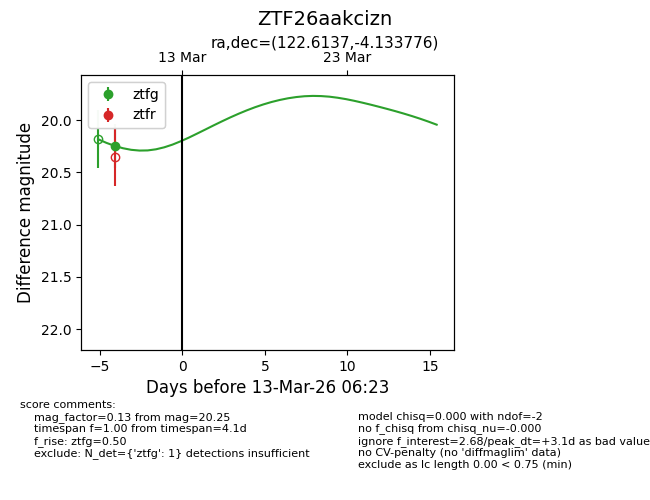
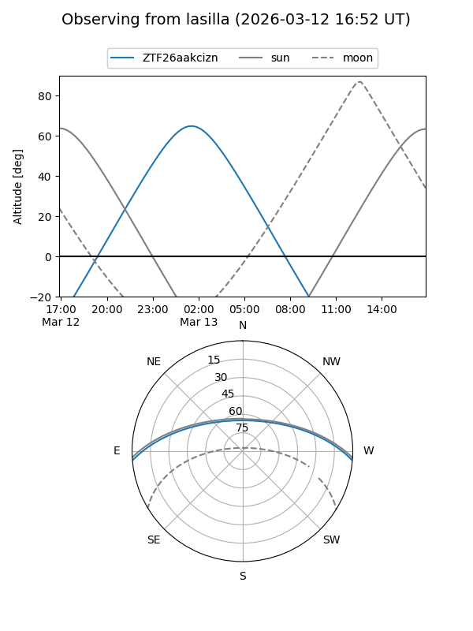
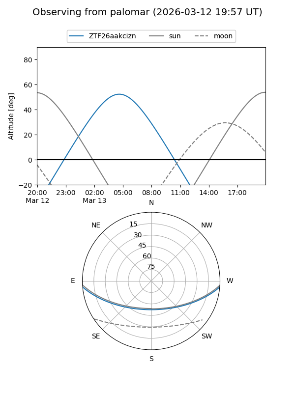
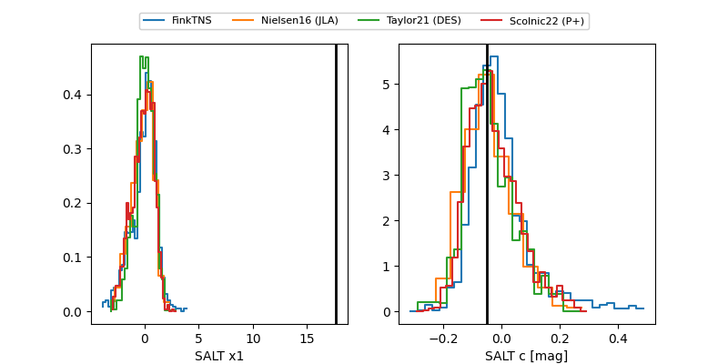

ZTF26aakcizn
Target ZTF26aakcizn at 2026-03-13 06:24
Aliases and brokers:
FINK: link
Lasair: link
ALeRCE: link
alt names
ZTF26aakcizn (ztf,fink_ztf)
Coordinates:
equatorial (ra, dec) = 122.6137,-4.13378
equatorial (HMS+DMS) = 08:10:27.30,-04:08:01.60
galactic (l, b) = (225.9988,+15.49484)
Flags:
Photometry:
last ztfg=20.25
1 ztfg detections
Lightcurve

Visibility


Additional plots
